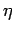
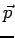
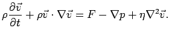
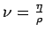
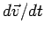
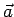

Nächste Seite: Smoothed Particle Hydrodynamics Aufwärts: Physikalische Grundlagen Vorherige Seite: Physikalische Grundlagen Inhalt
Die Viskositätskraft

in Richtung der Geschwindigkeitsänderung wirkt, die Druckkraft
und |

als kinematische Viskosität bezeichnet wird.Gleichung 2.1 und die Kontinuitätsgleichung
Die Kontinuitätsgleichung unter Annahme der Inkompressibilität (Gleichung 2.2) beschreibt in Worten, dass die Änderung der Dichte proportional zum Negativen der Divergenz des Geschwindigkeitsfeldes, also zum Zufluss ist. Ein positiver Zufluss bedeutet ein Steigen der Dichte.
Diese Einführung zu den NAVIER-STOKES Gleichungen und weiterführende Links finden sich bei [5].
Die vorliegende Arbeit verwendet den LAGRANGE'schen Formalismus, wodurch sich, wie in [2] beschrieben, einige Vereinfachungen ergeben. So kann die für den Massenerhalt zuständige Gleichung 2.2 ganz weggelassen werden, da die Masse auf Partikeln gespeichert ohnehin konstant bleibt.
Da sich die Partikel mit der Flüssigkeit bewegen, wird auch der konvektive Term aus Gleichung 2.1 nicht benötigt, und die linke Seite von Gleichung 2.1 ist nur noch die Zeitableitung der Geschwindigkeit


für das -te Partikel